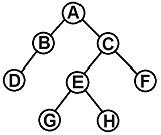
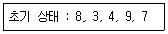
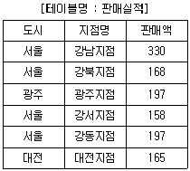
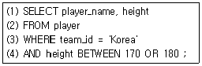
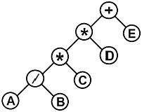
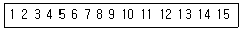
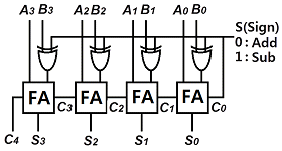
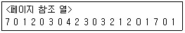
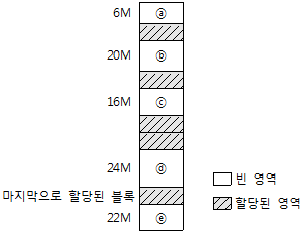

정보처리기사(구) (2016-08-21 기출문제)
1과목: 데이터 베이스
1. 한 릴레이션의 기본 키를 구성하는 어떠한 속성 값도 널(Null) 값이나 중복 값을 가질 수 없음을 의미하는 것은?
- 개체 무결성 제약 조건
- 참조 무결성 제약 조건
- 도메인 무결성 제약 조건
- 키 무결성 제약 조건
(정답률: 82%)

2. 관계형 대수의 연산자가 아닌 것은?
- JOIN
- PROJECT
- PRODUCT
- PART
(정답률: 70%)
3. 데이터베이스의 상태를 변환시키기 위하여 논리적 기능을 수행하는 하나의 작업 단위를 무엇이라고 하는가?
- 프로시저
- 트랜잭션
- 모듈
- 도메인
(정답률: 83%)
4. 다음 그림에서 트리의 Degree와 터미널 노드의 수는?

- 트리의 Degree: 4, 터미널 노드: 4
- 트리의 Degree: 2, 터미널 노드: 4
- 트리의 Degree: 4, 터미널 노드: 8
- 트리의 Degree: 2, 터미널 노드: 8
(정답률: 81%)
5. 해싱에서 동일한 홈 주소로 인하여 충돌이 일어난 레코드들의 집합을 의미하는 것은?
- Overflow
- Bucket
- Synonym
- Collision
(정답률: 81%)
6. 관계 해석 ‘모든 것에 대하여(for all)’의 의미를 나타내는 것은?
- ∃
- ∈
- ∀
- Ｕ
(정답률: 76%)
7. 자료구조에 대한 설명으로 옳지 않은 것은?
- 스택은 Last In - First Out 처리를 수행한다.
- 큐는 First In - First Out 처리를 수행한다.
- 스택은 서브루틴 호출, 인터럽트 처리, 수식 계산 및 수식 표기법에 응용된다.
- 큐는 비선형구조에 해당한다.
(정답률: 78%)
8. 병행제어 기법 중 로킹에 대한 설명으로 옳지 않은 것은?
- 로킹의 대상이 되는 객체의 크기를 로킹 단위라고 한다.
- 데이터베이스, 파일, 레코드 등은 로킹 단위가 될 수 있다.
- 로킹의 단위가 작아지면 로킹 오버헤드가 증가한다.
- 로킹의 단위가 커지면 데이터베이스 공유도가 증가한다.
(정답률: 78%)
9. 정규화 과정 중 1NF에서 2NF가 되기 위한 조건은?
- 1NF를 만족하고 모든 도메인이 원자 값이어야 한다.
- 1NF를 만족하고 키가 아닌 모든 애트리뷰트들이 기본 키에 이행적으로 함수 종속되지 않아야 한다.
- 1NF를 만족하고 다치 종속이 제거되어야 한다.
- 1NF를 만족하고 키가 아닌 모든 속성이 기본 키에 완전 함수적 종속되어야 한다.
(정답률: 58%)
10. 다음 자료에 대하여 “selection sort"를 사용하여 오름차순으로 정렬한 경우 PASS 3의 결과는?

- 3, 4, 7, 9, 8
- 3, 4, 8, 9, 7
- 3, 8, 4, 9, 7
- 3, 4, 7, 8, 9
(정답률: 63%)
11. 다음 표와 같은 판매실적 테이블에서 서울지역에 한하여 판매액 내림차순으로 지점명과 판매액을 출력하고자 한다. 가장 적절한 SQL구문은?

- SELECT 지점명, 판매액 FROM 판매실적 WHERE 도시= “서울” ORDER BY 판매액 DESC;
- SELECT 지점명, 판매액 FROM 판매실적 ORDER BY 판매액 DESC;
- SELECT 지점명, 판매액 FROM 판매실적 WHERE 도시= “서울” ASC;
- SELECT * FROM 판매실적 WHEN 도시= “서울” ORDER BY 판매액 DESC;
(정답률: 77%)
12. 트랜잭션에서 SQL 문들에 의해 수행된 모든 갱신을 취소시켜 데이터베이스를 트랜잭션의 첫 구문이 실행되기 전 상태로 되돌 리는 트랜잭션 연산은?
- ROLLBACK
- UPDATE
- CANCEL
- COMMIT
(정답률: 85%)
13. 뷰(View)에 대한 설명으로 옳지 않은 것은?
- 뷰는 독자적인 인덱스를 가질 수 없다.
- 뷰는 논리적 독립성을 제공한다.
- 뷰로 구성된 내용에 대한 삽입, 갱신, 삭제 연산에는 제약이 따른다.
- 뷰가 정의된 기본 테이블이 삭제되더라도 뷰는 자동적으로 삭제되지 않는다.
(정답률: 75%)
14. 어떤 컬럼 데이터를 조건 검색하는 SQL문에서 틀린 부분은 몇 번째 line인가? (단, 테이블 : player 컬럼 : player_name, team_id, height)

- (1)
- (2)
- (3)
- (4)
(정답률: 79%)
15. 다음 트리를 전위 순회(preorder traversal)한 결과는?

- ＋*AB/*CDE
- AB/C*D*E＋
- A/B*C*D＋E
- ＋**/ABCDE
(정답률: 77%)
16. SQL은 사용 용도에 따라 DDL, DML, DCL 로 구분할 수 있다. 다음 중 성격이 다른 하나는?
- UPDATE
- ALTER
- DROP
- CREATE
(정답률: 80%)
17. 해싱함수(Hashing Function)의 종류가 아닌 것은?
- 제곱(mid-square) 방법
- 숫자분석(digit analysis) 방법
- 체인(chain) 방법
- 제산(division) 방법
(정답률: 52%)
18. 병행제어(Concurrency Control)기법의 종류가 아닌 것은?
- 로킹기법
- 낙관적기법
- 타임스탬프기법
- 시분할기법
(정답률: 34%)
19. 탐색 방법 중 키 값으로부터 레코드가 저장되어 있는 주소를 직접 계산하여, 산출된 주소로 바로 접근하는 방법으로 키-주소 변환 방법이라고도 하는 것은?
- 이진 탐색
- 피보나치 탐색
- 해싱 탐색
- 블록 탐색
(정답률: 59%)
20. 다음과 같이 레코드가 구성되어 있을 때, 이진 검색 방법으로 14를 찾을 경우 비교되는 횟수는?

- 2번
- 3번
- 4번
- 5번
(정답률: 55%)
2과목: 전자 계산기 구조
21. 플립플롭에 대한 설명 중 틀린 것은?(문제 오류로 실제 시험당일에는 정답이 4번으로 발표되었으나 확정 답안 발표시 2, 4번이 중복 답안으로 인정되었습니다. 여기서는 4번을 누르면 정답 처리 됩니다.)
- D 플립플롭은 RS 플립플롭의 변형된 형태의 플립플롭이다.
- D 플립플롭은 입력 값에 관계없이 현 상태 값이 그대로 출력된다.
- T 플립플롭은 JK 플립플롭의 두 개의 입력을 하나로 묶은 플립플롭이다.
- T 플립플롭의 입력이 1이면 현 상태의 값이 출력된다.
(정답률: 65%)
22. 4비트 데이터 0101을 해밍코드(hamming code)로 표현하려고 한다. 코드의 구성은 P1P2D3P4D5 D6 D7 과 같이 한다. 여기서 Pn 은 패리티 비트를 의미하고, Dn은 데이터 즉, 0101을 의미한다. 변환된 해밍코드는?
- 0 0 0 0 1 0 1
- 0 0 0 1 1 0 1
- 0 1 0 0 1 0 1
- 0 1 0 1 1 0 1
(정답률: 35%)
23. 인터럽트 요청신호 플래그(Flag)를 차례로 검사하여 인터럽트의 원인을 판별하는 방식은?
- 스트로브 방식
- 데이지 체인 방식
- 폴링 방식
- 하드웨어 방식
(정답률: 52%)
24. 간접 상태(Indirect state) 동안에 수행되는 것은?
- 명령어를 읽는다.
- 오퍼랜드의 주소를 읽는다.
- 오퍼랜드를 읽는다.
- 인터럽트를 처리한다.
(정답률: 58%)
25. 누산기(accumulator)에 대한 설명으로 가장 옳은 것은?
- 연산장치에 있는 레지스터(register)의 하나로 연산 결과를 일시적으로 기억하는 장치이다.
- 주기억장치 내에 존재하는 회로로 가감승제 계산 및 논리 연산을 행하는 장치이다.
- 일정한 입력 숫자들을 더하여 그 누계를 항상 보관하는 장치이다.
- 정밀 계산을 위해 특별히 만들어 두어 유효 숫자의 개수를 늘리기 위한 것이다.
(정답률: 59%)
26. 메가플롭스(MFLOPS)에 대하여 가장 잘 설명한 것은?
- 1클록 펄스 간에 실행되는 부동소수점 연산의 수를 10만을 단위로 하여 나타낸 수
- 1클록 펄스 간에 실행되는 고정소수점 연산의 수를 10만을 단위로 하여 나타낸 수
- 1초간에 실행되는 부동소수점 연산의 수를 100만을 단위로 하여 나타낸 수
- 1초간에 실행되는 고정소수점 연산의 수를 100만을 단위로 하여 나타낸 수
(정답률: 54%)
27. 16개의 입력 선을 가진 multiplexer의 출력에 32개의 출력 선을 가진 demultiplexer를 연결했을 경우에 multiplexer와 demultiplexer의 선택 선은 각각 몇 개를 가져야 하는가?
- 멀티플렉서 : 4개, 디멀티플렉서 : 5개
- 멀티플렉서 : 4개, 디멀티플렉서 : 3개
- 멀티플렉서 : 8개, 디멀티플렉서 : 4개
- 멀티플렉서 : 4개, 디멀티플렉서 : 8개
(정답률: 60%)
28. 8진수 474를 2진수로 변환하면?
- 101 111 101
- 010 001 110
- 011 110 011
- 100 111 100
(정답률: 62%)
29. IEEE 754에서 규정하는 부동소수(Floating point number)를 표현하는데 필요로 하지 않는 비트 정보는?
- Sign
- Biased exponent
- Point
- Fraction
(정답률: 39%)
30. Instruction을 수행하기 위한 Major State에 관한 설명으로 가장 옳은 것은?
- 명령어를 가져오기 위해 기억장치에 접근하는 것을 Fetch 상태라 한다.
- Execute 상태는 간접주소 지정방식의 경우만 수행된다.
- CPU의 현재 상태를 보관하기 위한 기억장치 접근을 Indirect 상태라 한다.
- 명령어 종류를 판별하는 것을 Indirect 상태라 한다.
(정답률: 56%)
31. 마이크로프로그램 제어기가 다음에 수행할 마이크로 인스트럭션의 주소를 결정하는데 사용하는 정보가 아닌 것은?
- 인스트럭션 레지스터(IR)
- 타이밍 신호
- CPU의 상태 레지스터
- 마이크로 인스트럭션에 나타난 주소
(정답률: 45%)
32. 다음 조합 논리 회로의 명칭은?

- 플립플롭
- 4비트 비교기
- 4x4 디코더
- 4비트 병렬 가감산기
(정답률: 56%)
33. CPU가 어떤 명령과 다음 명령을 수행하는 사이를 이용하여 하나의 데이터 워드를 직접 전송하는 DMA 방식을 무엇이라고 하는가?
- word stealing
- word transfer
- cycle stealing
- cycle transfer
(정답률: 51%)
34. 메모리로부터 읽혀진 명령어의 오퍼레이션 코드(OP-code)는 CPU의 어느 레지스터에 들어가는가?
- 누산기
- 임시 레지스터
- 연산 논리장치
- 인스트럭션 레지스터
(정답률: 49%)
35. 출력 측의 일부가 입력 측에 피드백 되어 유발되는 레이스 현상을 없애기 위해 고안된 플립플롭은?
- JK 플립플롭
- M/S 플립플롭
- RS 플립플롭
- D 플립플롭
(정답률: 41%)
36. Flynn의 컴퓨터 구조 분류법 중 여러 개의 처리기에서 수행되는 명령어들은 각기 다르나 전체적으로 하나의 데이터 스트림을 가지는 형태는?
- SISD
- MISD
- SIMD
- MIMD
(정답률: 60%)
37. 인스트럭션 세트의 효율성을 높이기 위하여 고려할 사항이 아닌 것은?
- 기억공간
- 사용빈도
- 레지스터의 종류
- 주기억장치 밴드폭 이용
(정답률: 42%)
38. 주기억장치는 하드웨어의 특성상 주기억장치가 제공할 수 있는 정보 전달 능력에 한계가 있는데, 이 한계를 주기억장치의 무엇 이라 하는가?
- Transfer
- bandwidth
- accesswidth
- transferwidth
(정답률: 58%)
39. 조합논리회로 중 중앙처리장치에서 번지 해독, 명령 해독 등에 사용되는 회로는?
- 디코더(Decoder)
- 엔코더(Encoder)
- 멀티플렉서(MUX)
- 디멀티플렉서(DEMUX)
(정답률: 63%)
40. interleaved memory에 대한 설명과 가장 관계가 없는 것은?
- 중앙처리장치의 쉬는 시간을 줄일 수 있다.
- 단위시간당 수행할 수 있는 명령어의 수를 증가시킬 수 있다.
- 이 기억장치를 구성하는 모듈의 수 만큼의 단어들에 동시 접근이 가능하다.
- 주메모리의 데이터의 저장 공간을 가상기억공간에 맵핑하여 확장하기 위한 방법이다.
(정답률: 42%)
3과목: 운영체제
41. 다중 처리기 운영체제 구조 중 주/종(Master/Slave) 처리기 시스템에 대한 설명으로 옳지 않은 것은?
- 종프로세서는 입출력 발생 시 주프로세서에게 서비스를 요청한다.
- 주프로세서는 입출력과 연산 작업을 수행한다.
- 한 처리기를 종프로세서로 지정하고 다른 처리기들은 주프로세서로 지정하는 구조이다.
- 주프로세서만이 운영체제를 실행할 수 있다.
(정답률: 64%)
42. 파일 구성 방식 중 ISAM(Indexed Sequential Access-Method)의 물리적인 색인(index)구성은 디스크의 물리적 특성에 따라 색인을 구성하는데, 다음 중 3단계 색인에 해당되지 않는 것은?
- Cylinder index
- Track index
- Master index
- Volume index
(정답률: 61%)
43. 다음의 페이지 참조 열(Page reference string)에 대해 페이지 교체 기법으로 FIFO를 사용할 경우 페이지 부재(Page Fault) 횟수는? (단, 할당된 페이지 프레임 수는 3이고 처음에는 모든 프레임이 비어 있음)

- 6
- 12
- 15
- 20
(정답률: 62%)
44. 운영체제(Operating System)의 기능으로 옳지 않은 것은?
- 컴퓨터의 자원(Resource)들을 효율적으로 관리하는 기능
- 입·출력에 대한 일을 대행하거나 사용자가 컴퓨터를 손쉽게 사용할 수 있도록 하는 인터페이스 기능
- 사용자가 작성한 원시 프로그램을 기계언어(Machine Language)로 번역시키는 기능
- 시스템에서 발생하는 오류(Error)로부터 시스템을 보호하는 신뢰성 기능
(정답률: 75%)
45. 스레드(Thread)에 대한 설명으로 가장 적합하지 않은 것은?
- 한 개의 프로세스는 여러 개의 스레드를 가질 수 없다.
- 커널 스레드의 경우 운영체제에 의해 스레드를 운용한다.
- 사용자 스레드의 경우 사용자가 만든 라이브러리를 사용 하여 스레드를 운용한다.
- 스레드를 사용함으로써 하드웨어, 운영체제의 성능과 응용 프로그램의 처리율을 향상시킬 수 있다.
(정답률: 74%)
46. 디스크 스케줄링에서 SSTF(Shortest Seek Time First)에 대한 설명으로 가장 적합하지 않은 것은?
- 탐색 거리가 가장 짧은 요청이 먼저 서비스를 받는다.
- 일괄처리 시스템보다는 대화형 시스템에 적합하다.
- 가운데 트랙이 안쪽이나 바깥쪽 트랙보다 서비스 받을 확률이 높다.
- 헤드에서 멀리 떨어진 요청은 기아상태(starvation)가 발생할 수 있다.
(정답률: 54%)
47. 스케줄링 방식 중 라운드 로빈 방식에서 시간간격을 무한히 크게 하면 어떤 방식과 동일하게 되는가?
- LIFO 방식
- FIFO 방식
- HRN 방식
- Multilevel Queue 방식
(정답률: 59%)
48. Virtual Memory에서 Main Memory로 페이지를 옮겨 넣을 때 주소를 조정해 주어야 하는데 이를 무엇이라 하는가?
- mapping
- scheduling
- matching
- loading
(정답률: 74%)
49. 분산 처리 운영체제 시스템을 설계하는 주된 이유가 아닌 것은?
- 신뢰도 향상
- 자원 공유
- 보안의 향상
- 연산 속도 향상
(정답률: 70%)
50. 페이징 기법과 세그먼테이션 기법에 대한 설명으로 가장 옳지 않은 것은?
- 페이징 기법에서는 주소 변환을 위한 페이지 맵 테이블이 필요하다.
- 프로그램을 일정한 크기로 나눈 단위를 페이지라고 한다.
- 세그먼테이션 기법에서는 하나의 작업을 크기가 각각 다른 여러 논리적인 단위로 나누어 사용한다.
- 세그먼테이션 기법에서는 내부 단편화가, 페이징 기법에 서는 외부 단편화가 발생할 수 있다.
(정답률: 62%)
51. 페이지 교체기법 알고리즘 중 각 페이지마다 "Reference Bit"와 "Modified Bit"가 사용되는 것은?
- LRU
- NUR
- FIFO
- LFU
(정답률: 59%)
52. 은행원 알고리즘은 교착상태 해결 방법 중 어떤 기법에 해당하는가?
- Prevention
- Recovery
- Avoidance
- Detection
(정답률: 72%)
53. 버퍼링과 스풀링에 대한 설명으로 가장 옳지 않은 것은?
- 버퍼링과 스풀링은 페이지 교체 기법의 종류이다.
- 스풀링의 SPOOL은 “Simultaneous Peripheral Operation On-Line”의 약어이다.
- 버퍼링은 주기억장치의 일부를 사용한다.
- 스풀링은 디스크의 일부를 사용한다.
(정답률: 47%)
54. UNIX에서 파일 사용 권한 지정에 관한 명령어는?
- mv
- ls
- chmod
- fork
(정답률: 78%)
55. 프로세스 상태의 종류가 아닌 것은?
- Ready
- Running
- Request
- Exit
(정답률: 51%)
56. 마스터 파일 디렉토리와 각 사용자별로 만들어지는 사용자 파일 디렉토리로 구성되는 디렉토리 구조는?
- 트리 디렉토리 구조
- 비순환 그래프 디렉토리 구조
- 1단계 디렉토리 구조
- 2단계 디렉토리 구조
(정답률: 57%)
57. 운영체제에 대한 설명으로 가장 옳지 않은 것은?
- 여러 사용자들 사이에서 자원의 공유를 가능하게 한다.
- 사용자 인터페이스를 제공한다.
- 자원의 효과적인 경영 및 스케줄링을 한다.
- 운영체제의 종류에는 UNIX, LINUX, JAVA 등이 있다.
(정답률: 77%)
58. 그림과 같은 메모리 구성에서 15M 크기의 블록을 메모리에 할당하고자 한다. ⓒ 영역에 할당시킬 경우 사용된 정책은 무엇인가?

- Best-Fit
- First-Fit
- Next-Fit
- Worst-Fit
(정답률: 78%)
59. UNIX shell에 대한 설명으로 옳지 않은 것은?
- 명령어를 해석하는 명령해석기이다.
- 프로세스 관리를 한다.
- 단말장치로부터 받은 명령을 커널로 보내거나 해당 프로그램을 작동시킨다.
- 사용자와 커널 사이에서 중계자 역할을 한다.
(정답률: 62%)
60. UNIX의 특징이 아닌 것은?
- 트리 구조의 파일 시스템을 갖는다.
- 대화식 운영체제이다.
- Multi-User는 지원하지만 Multi-Tasking은 지원하지 않는다.
- 이식성이 높으며, 장치, 프로세스 간의 호환성이 높다.
(정답률: 76%)
4과목: 소프트웨어 공학
61. S/W를 운용하는 환경 변화에 대응하여 S/W를 변경하는 경우로 써, O/S와 Compiler 같은 개발환경의 변화 또는 Peripheral Device, System Component, element가 향상되거나 변경될 경우에 대처 가능한 Maintenance의 형태는?
- Corrective
- Perfective
- Preventive
- Adaptive
(정답률: 63%)
62. White Box Testing의 설명으로 옳지 않은 것은?
- Base Path Testing, Boundary Value Analysis가 대표적인 기법이다.
- Source Code의 모든 문장을 한번 이상 수행함으로써 진행된다.
- 모듈 안의 작동을 직접 관찰할 수 있다.
- 산출물의 각 기능별로 적절한 프로그램의 제어구조에 따라 선택, 반복 등의 부분들을 수행함으로써 논리적 경로를 점검한다.
(정답률: 60%)
63. 소프트웨어 프로젝트 관리를 효과적으로 수행하는데 필요한 3P 에 해당하지 않는 것은?
- People
- Problem
- Procedure
- Process
(정답률: 73%)
64. 효과적인 모듈화 설계 방법으로 가장 거리가 먼 것은?
- Coupling은 강하게 Cohesion는 약하게 설계한다.
- Complexity와 Redundancy를 최대한 줄일 수 있도록 설계한다.
- Maintenance가 용이하도록 설계한다.
- Module 크기는 시스템의 전반적인 기능과 구조를 이해하기 쉬운 크기로 설계한다.
(정답률: 72%)
65. 소프트웨어 재사용에 대한 설명으로 거리가 먼 것은?
- 새로운 개발 방법론의 도입이 어려워질 수 있다.
- 소프트웨어 개발의 생산성이 향상된다.
- 시스템 명세, 설계, 코드 등 문서의 공유도가 증가한다.
- 프로젝트 실패의 위험이 증가된다.
(정답률: 75%)
66. Formal Technical Review의 지침 사항으로 거리가 먼 것은?
- 논쟁과 반박의 제한을 두지 않는다.
- 자원과 시간 일정을 할당한다.
- 문제 영역을 명확히 표현한다.
- 모든 검토자들을 위해 의미 있는 훈련을 행한다.
(정답률: 75%)
67. 소프트웨어 위기 발생 요인과 거리가 먼 것은?
- 개발 일정의 지연
- 소프트웨어 관리의 부재
- 소프트웨어 품질의 미흡
- 소프트웨어 생산성 향상
(정답률: 78%)
68. 프로젝트 일정 관리 시 사용하는 Gantt Chart에 대한 설명으로 옳지 않은 것은?
- 막대로 표시하며, 수평 막대의 길이는 각 태스크의 기간을 나타낸다.
- 작업들 간의 상호 관련성, 결정경로를 표시한다.
- 이정표, 기간, 작업, 프로젝트 일정을 나타낸다.
- 시간선(Time-line) 차트라고도 한다.
(정답률: 59%)
69. 럼바우(Rumbaugh) 분석기법에서 정보 모델링이라고도 하며, 시스템에서 요구되는 객체를 찾아내어 속성과 연산 식별 및 객체들 간의 관계를 규정하여 그래픽 다이어그램으로 표시하는 모델링은?
- Object
- Dynamic
- Function
- Static
(정답률: 64%)
70. Software Reengineering의 필요성이 대두된 가장 주된 이유는?
- 구현의 문제
- 설계의 문제
- 요구사항 분석의 문제
- 유지보수의 문제
(정답률: 70%)
71. 사용자 요구사항의 분석 작업이 어려운 이유로 가장 거리가 먼 것은?
- 개발자와 사용자 간의 지식이나 표현의 차이가 커서 상호 이해가 쉽지 않다.
- 사용자의 요구사항이 모호하고 부정확하며, 불완전하다.
- 사용자의 요구사항은 거의 예외가 없어 열거와 구조화가 용이하다.
- 개발하고자 하는 시스템 자체가 복잡하다.
(정답률: 72%)
72. Alpha test, Beta test와 관계있는 검사 방법은?
- Unit
- Integration
- System
- Validation
(정답률: 49%)
73. 자료 사전에서 자료의 생략을 의미하는 기호는?
- { }
- **
- =
- ()
(정답률: 72%)
74. 공학적 관점에서 좋은 소프트웨어에 대한 설명으로 적합하지 않은 것은?
- 사용법, 구조의 설명, 성능, 기능이 이해하기 쉬워야 한다.
- 사용자 수준에 따른 적당한 사용자 인터페이스를 제공한 다.
- 실행 속도가 빠르고, 소요 기억 용량을 많이 차지할수록 좋다.
- 유지보수가 용이해야 한다.
(정답률: 79%)
75. 설계품질을 평가하기 위해서는 반드시 올바른 설계에 대한 기준을 세워야 한다. 다음 중 올바른 기준이라고 할 수 없는 것은?
- 설계는 모듈적이어야 한다.
- 설계는 자료와 프로시저에 대해 분명하고 분리된 표현을 포함해야 한다.
- 소프트웨어 요소들 간의 효과적 제어를 위해 설계에서 계층적 조직이 제시되어야 한다.
- 설계는 서브루틴이나 프로시저가 전체적이고 통합적이 될 수 있도록 유도되어야 한다.
(정답률: 52%)
76. 객체지향기법에서 Encapsulation에 대한 설명으로 옳지 않은 것은?
- 객체 간의 결합도가 높아진다.
- 변경 발생 시 오류의 파급효과가 적다.
- 소프트웨어 재사용성이 높아진다.
- 인터페이스가 단순화된다.
(정답률: 67%)
77. Software Reengineering에 관한 설명으로 거리가 먼 것은?
- Restructuring은 Reengineering의 한 유형으로 User requirement나 기술적 설계의 변경 없이 Software를 개선하는 것이다.
- Redevelopment와 Reengineering은 동일한 의미로 기존 시스템을 토대로 시스템을 개발하는 것이다.
- User Requirement를 변경시키지 않고, 기술적 설계를 변경하여 프로그램을 개선하는 것도 재공학이다.
- 현재 시스템을 변경하거나 Restructuring하는 것이다.
(정답률: 43%)
78. 소프트웨어 프로젝트 일정이 지연될 경우, 개발 사업 말기에 인력을 추가 배치하는 것은 사업 일정을 더욱 지연시키는 결과를 초래한다는 법칙은?
- Boehm
- Albrecht
- Putnam
- Brooks
(정답률: 75%)
79. 객체지향 기법에서 객체가 메시지를 받아 실행해야 할 객체의 구체적인 연산을 정의한 것은?
- Entity
- Method
- Instance
- Class
(정답률: 65%)
80. ISO 9126에 근거한 소프트웨어 품질목표 중 명시된 조건 하에서 소프트웨어 제품의 일정한 성능과 자원 소요량의 관계에 관한 속성, 즉 요구되는 기능을 수행하기 위해 필요한 자원의 소요 정도를 의미하는 것은?
- Usability
- Reliability
- Functionality
- Efficiency
(정답률: 49%)
5과목: 데이터 통신
81. 망(network) 구조의 기본 유형이 아닌 것은?
- 버스형
- 링형
- 트리형
- 십자형
(정답률: 69%)
82. PCM 과정 중 양자화 과정에서 레벨 수가 128 레벨인 경우 몇 비트로 부호화가 되는가?
- 7bit
- 8bit
- 9bit
- 10bit
(정답률: 65%)
83. 패킷을 목적지까지 전달하기 위해 사용되는 라우팅 프로토콜은?
- ICMP
- RIP
- ARP
- HTTP
(정답률: 58%)
84. 16진 QAM에 관한 설명으로 옳지 않은 것은?
- 16진 PSK 변조 방식보다 동일한 전송 에너지에 대해 오류 확률이 낮다.
- Noncoherent 방식으로 신호를 검출할 수 있다.
- 진폭과 위상이 변화하는 변조방식이다.
- 2차원 벡터 공간에 신호를 나타낼 수 있다.
(정답률: 41%)
85. 다음 중 자유경쟁으로 채널 사용권을 확보하는 방법으로 노드 간의 충돌을 허용하는 네트워크 접근 방법은?
- Slotted Ring
- Token Passing
- CSMA/CD
- Polling
(정답률: 50%)
86. QPSK 변조 시 각 신호 간의 위상차는?
- 45°
- 90°
- 135°
- 180°
(정답률: 63%)
87. IP 주소에서 1개의 C-class는 32비트의 길이로 8비트 호스트 식별자를 갖는다. 이 때 최대 몇 개의 호스트 주소를 가질 수 있는가?
- 128개
- 254개
- 1024개
- 4096개
(정답률: 57%)
88. 16상 위상변조의 변조속도가 1200baud인 경우 데이터 전송 속도(bps)는?
- 1200
- 2400
- 4800
- 9600
(정답률: 70%)
89. 회선구성 방식 중 두 개의 스테이션 간 별도의 회선을 사용하여 1대 1로 연결하는 가장 보편적인 방식은?
- 멀티드롭 링크
- 멀티패스 링크
- 점대점 링크
- 균형 링크
(정답률: 74%)
90. 최초의 라디오 패킷(radio packet) 통신방식을 적용한 컴퓨터 네트워크 시스템은?
- DECNET
- ALOHA
- SNA
- ARPANET
(정답률: 67%)
91. 신호 대 잡음비가 63인 전송채널이 있다. 이 채널의 대역폭이 8kHz라 하면 통신용량(bps)은?
- 64420
- 48000
- 25902
- 55270
(정답률: 50%)
92. UDP 헤더에 포함되지 않는 것은?
- checksum
- UDP total length
- sequence number
- source port address
(정답률: 39%)
93. 동기식 문자 지향 프로토콜 프레임에서 전송될 문자의 시작을 나타내는 제어 문자는?
- SYN
- DLE
- STX
- CRC
(정답률: 68%)
94. 패킷 교환망에서 DCE와 DTE 사이에 이루어지는 상호작용을 규정한 프로토콜은?
- X.25
- TCP
- UDP
- IP
(정답률: 65%)
95. 베이스 밴드 전송방식 중 비트 간격의 시작점에서는 항상 천이가 발생하며, “1”의 경우에는 비트 간격의 중간에서 천이가 발생 하고, “0”의 경우에는 비트 간격의 중간에서 천이가 발생하지 않는 방식은?
- NRZ-L 방식
- NRZ-M 방식
- NRZ-S 방식
- NRZ-I 방식
(정답률: 40%)
96. 다수의 타임 슬롯으로 하나의 프레임이 구성되고, 각 타임 슬롯에 채널을 할당하여 다중화하는 것은?
- TDM
- CDM
- FDM
- CSM
(정답률: 63%)
97. IP address에서 네트워크 ID와 호스트 ID를 구별하는 방식은?
- 서브넷 마스크
- 클래스 E
- 클래스 D
- IPv6
(정답률: 65%)
98. IEEE 802.4의 표준안 내용으로 맞는 것은?
- 토큰 버스 LAN
- 블루투스
- CSMA/CD LAN
- 무선 LAN
(정답률: 64%)
99. 파형부호화 방식(waveform coding)에 속하지 않는 것은?
- PCM
- LPC
- DPCM
- DM
(정답률: 43%)
100. 반송파의 진폭과 위상을 상호 변환하여 신호를 전송함으로써 전송 속도를 높이는 변조 방식은?
- ASK
- FM
- PSK
- QAM
(정답률: 63%)